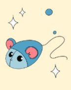

<!DOCTYPE html>
<html lang="sq"><head>
    <meta charset="utf-8">
    <meta name="viewport" content="width=device-width, initial-scale=1">
    <title>Shoqëria dhe mjedisi</title>
    <meta name="title-id" content="pg045_sec001">
    <!-- Despite the name, this is the page's 1-based position in the reading
         order, not a section id and not the printed page number. It drives the
         "N of M" dock counter and is re-emitted on every package, so it tracks
         the current order. Identity lives in title-id above. -->
    <meta name="page-section-id" content="75">
    <link href="./content/tailwind_output.css" rel="stylesheet">
    <link href="./assets/libs/fontawesome/css/all.min.css" rel="stylesheet">
    <link href="./assets/fonts.css" rel="stylesheet">
<link rel="stylesheet" href="./book-design/components.css?v=be4b8ba5dee6e5f7" data-book-style="true">
<style>
/* Answer boxes inside rubric panels: one ruled box per question (shared .b-lined), on white. */
#content.book.b-lesson .b-lesson-thought .b-lesson-prompt textarea.b-lined{border:2px solid #6d6472;border-radius:10px;color:var(--book-ink)}
#content.book.b-lesson .b-lesson-thought .b-lesson-prompt textarea.b-lined:focus-visible{outline:3px solid #075a70;outline-offset:2px;border-color:#075a70}
#content.book.b-lesson .b-lesson-thought.is-outlined .b-lesson-prompt+.b-lesson-prompt{margin-top:20px}

#content.book.p45 .p45-quote{margin:0;padding-left:1.1em;font:italic 400 22px/1.5 var(--book-heading);color:var(--book-ink)}
#content.book.p45 .p45-research label{padding-left:0}
#content.book.p45 .p45-research label::before{content:none}
#content.book.p45 .p45-research{flex:1 1 auto;min-width:0;margin:0}
#content.book.p45 .b-lesson-thought.is-discussion .b-lesson-prompt+.b-lesson-prompt{margin-top:20px}
@media(max-width:700px){#content.book.p45 .p45-quote{font-size:20px}}
</style>
</head>
<body class="min-h-screen flex items-center justify-center">
<main class="w-full">
<div id="content" class="container opacity-0 book b-lesson p45" data-family="response">
<section data-section-type="other" data-section-id="pg045_sec001">
<div class="b-page-rule" aria-hidden="true"></div>
<aside class="b-lesson-thought is-outlined" aria-labelledby="p45-questions">
 <div class="b-lesson-thought-head"><h1 id="p45-questions" class="b-rubric" data-id="pg045_n0003">Pyetje për ty</h1></div>
 <div class="b-lesson-prompt"><label for="item-1"><span data-id="pg045_n0007">Flisni për vlerat tradicionale të vendit tonë!</span></label><textarea id="item-1" data-activity-item="item-1" class="b-lined" rows="3" spellcheck="true"></textarea></div>
 <div class="b-lesson-prompt"><label for="item-2"><span data-id="pg045_n0009">A mendon se kjo fjali paraqet respekt ndaj të tjerëve (Arsyeto përgjigjen!):</span></label><p class="p45-quote"><span data-id="pg045_n0010">“Pranoji njerëzit (shoqen dhe shokun) ashtu siç janë, pa i paragjykuar për kulturën, gjuhën apo traditat e tyre!”</span></p><textarea id="item-2" data-activity-item="item-2" class="b-lined" rows="3" spellcheck="true"></textarea></div>
 <div class="b-lesson-prompt"><label for="item-3"><span data-id="pg045_n0012">Diskuto me mësuesin dhe prindërit rreth kulturave të ndryshme!</span></label><textarea id="item-3" data-activity-item="item-3" class="b-lined" rows="3" spellcheck="true"></textarea></div>
</aside>
<aside class="b-lesson-thought is-research">
 <div class="b-lesson-thought-icon-only">
  <div class="b-lesson-prompt p45-research"><label for="item-4"><span data-id="pg045_n0014">Bashkë me ndihmën e prindërve apo të mësuesit, hulumto në internet dhe gjej informacione për veshjet dhe ushqimet në kulturat e ndryshme të botës.</span></label><textarea id="item-4" data-activity-item="item-4" class="b-lined" rows="3" spellcheck="true"></textarea></div>
 </div>
</aside>
<aside class="b-lesson-thought is-discussion" aria-labelledby="p45-discuss">
 <div class="b-lesson-thought-head"><h2 id="p45-discuss" class="b-rubric" data-id="pg045_n0017">Diskuto</h2></div>
 <div class="b-lesson-prompt"><label for="item-5"><span data-id="pg045_n0021">A dalluakan veshjet ndërmjet popujve të ndryshëm në botë?</span></label><textarea id="item-5" data-activity-item="item-5" class="b-lined" rows="3" spellcheck="true"></textarea></div>
 <div class="b-lesson-prompt"><label for="item-6"><span data-id="pg045_n0023">Po ushqimet?</span></label><textarea id="item-6" data-activity-item="item-6" class="b-lined" rows="3" spellcheck="true"></textarea></div>
 <div class="b-lesson-prompt"><label for="item-7"><span data-id="pg045_n0025">Analizo se pse ushqimet dhe veshjet janë pjesë e kulturës së secilit popull.</span></label><textarea id="item-7" data-activity-item="item-7" class="b-lined" rows="3" spellcheck="true"></textarea></div>
</aside>
</section></div>
</main>

    <div class="relative z-50" id="interface-container"></div>
    <div class="relative z-50" id="nav-container"></div>
    <script src="./assets/offline-preloader.js?v=be4b8ba5dee6e5f7"></script>
    <script src="./assets/scorm.js"></script>
    <script src="./assets/base.bundle.local.js"></script>


<script src="./book-design/responses.js?v=be4b8ba5dee6e5f7" data-book-responses="true"></script></body></html>